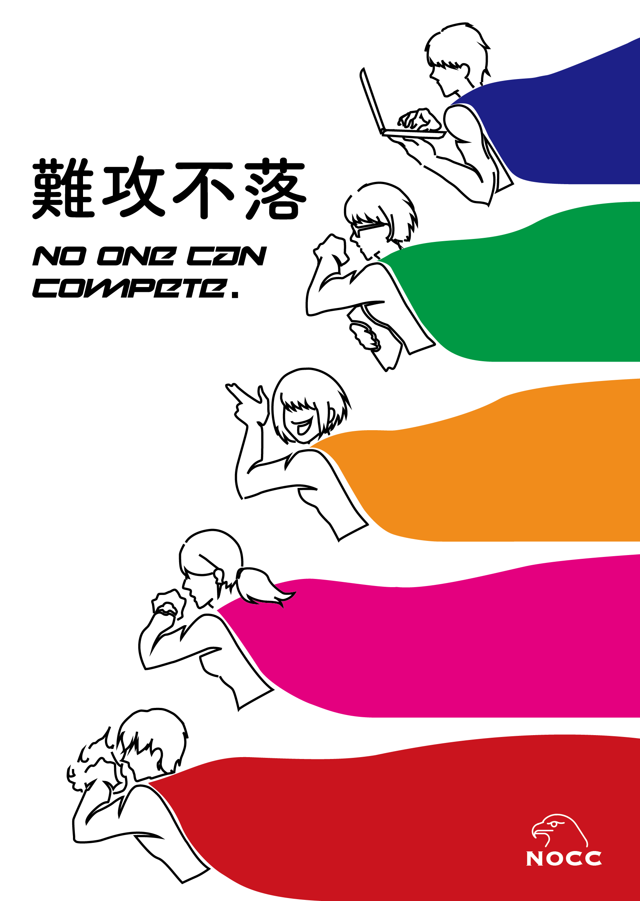
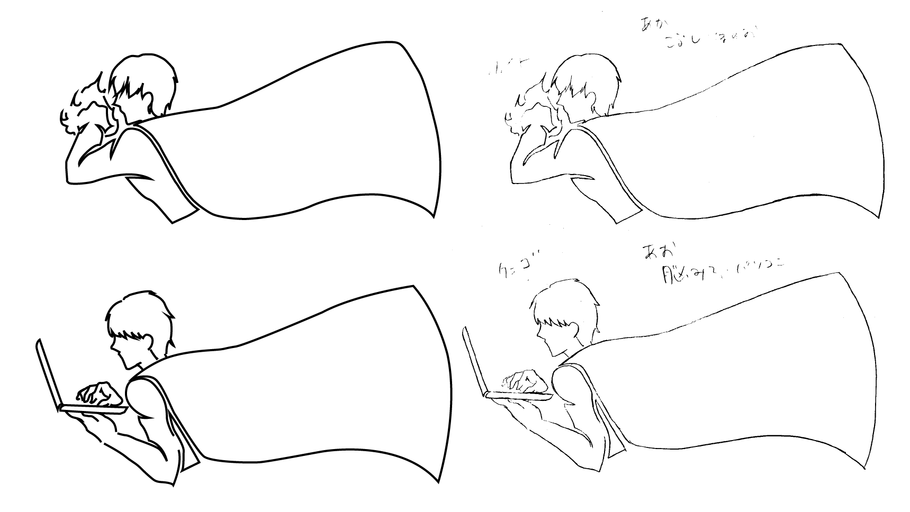

４期 課題発見 授業課題
NOCC ポスター
難攻不落 コンセプトは最強の会社
課題発見という架空の会社を作る授業で自社のポスターを制作しました。私たちのグループはブレインストーミングをして「難攻不落」というパワーワードを見つけました。「絶対に倒産しない最強の会社を目指して私たち５人のヒーローは前に進む」という気持ちでポスターを制作しました。私たちの会社は課題発見で２０社中の２位を獲得することができました！かいとくんあんじぇらさんはるかもぎちゃん、ありがとう！
手書きイラストをIllustratorでトレース
手書きのイラストをスキャンしてIllustratorのペンツールで上からなぞりました。この作業のおかげでベジェ曲線の扱いが上手くなりました。最高のイラストを提供してくださったもぎちゃんありがとう。元のイラストが良かったので、まあまあいい感じのポスターになりました。
制作ソフト Adobe Illustrator
製作期間 １週間
関連する作品